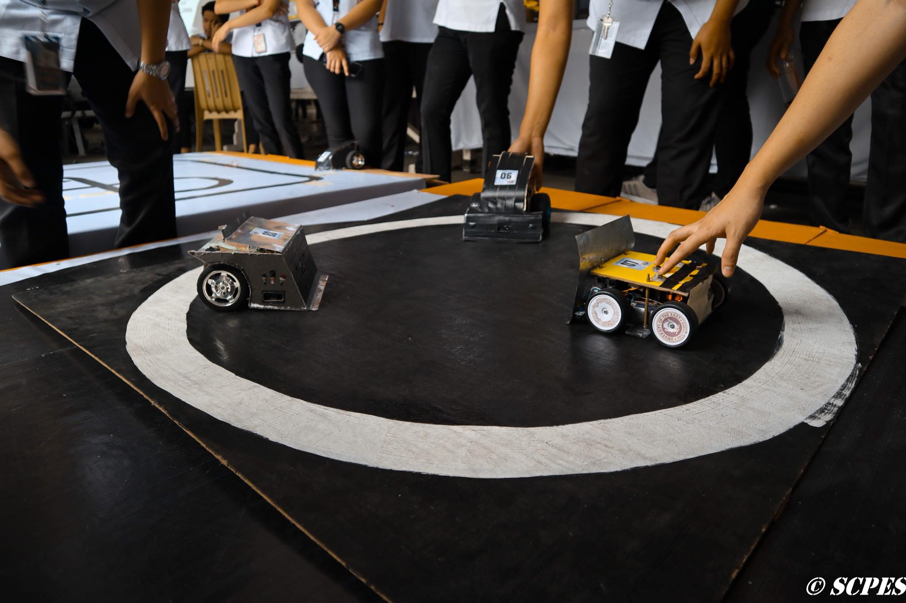
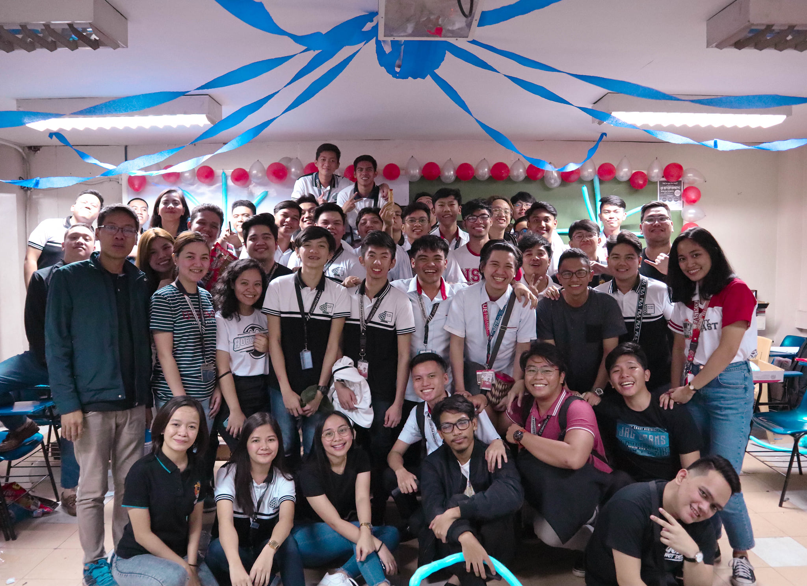

We're the ones who can build the future with you. So bring your imagination, grit and talent!
Computer Engineering is a four-year engineering program that embodies the science and technology of design, development, implementation, maintenance and integration of software and hardware components in modern computing systems and computer controlled equipment.
This list gives a good idea of what other graduates have done and what potential careers a Computer Engineering degree can offer. Some choices are more closely related to specific areas of Computer Engineering than others.

Create software using the right programming languages, platforms and architectures. Not only do they build their systems, but they also develop, test, improve and maintain software by other engineers.

Create comprehensive plans of the networks they are creating with precise information describing how the network parts will work together. Interpersonal skills. These workers must work with different types of employees to successfully design and implement computer and information networks.

Calculate requirements for how much memory, storage, and computing power the computer system needs. They prepare diagrams for programmers or engineers to use when building the system. Analysts also work with these people to solve problems that arise after the initial system setup.

Serve as the bridge between the business and data science sectors. Data analysts must be able to convey their conclusions in ways that are understandable to all project stakeholders, even when they spend a lot of time gathering pertinent data from many sources. Data analysts execute data munging, processing, and visualization tasks using their technical expertise.

Machine Learning Engineers are highly skilled ML professionals who specialize in creating intelligent machines and systems that can learn from experience and carry out activities akin to those performed by humans with little to no human oversight. They develop cutting-edge ML algorithms that can instruct computers on how to carry out particular jobs without having to explicitly program them to do so.

Play the lead role in planning, executing, monitoring, controlling, and closing out projects. They are accountable for the entire project scope, the project team and resources, the project budget, and the success or failure of the project.
Program Educational Objectives
Apply their technical knowledge to function in the advancement of technologies in the industries as practicing professionals.
Engage collaboration within a professional team environment and career challenges with high moral values for life-long learning.
Advance professionally to greater roles in engineering, graduate education and even in community development by applying technical, leadership and communication skills to support various service activities.
The interpersonal, teamwork and communication skills to enable them to be productive members of the interdisciplinary engineering teams.
Adhere to ethical standards in the practice of the computer engineering profession.
Program Outcome
Ability to apply knowledge of mathematics, physical, life and information sciences; and engineering sciences appropriate to computer engineering.
An ability to design and conduct complex experiments, as well as to analyze and interpret data.
An ability to design a complex system, component, or process to meet desired needs within realistic constraints such as economic, environmental, social, political, ethical, health and safety, manufacturability, and sustainability, in accordance with standard.
Ability to recognize, formulates and solve complex computer engineering problem.
An understanding of the effects of computer engineering solutions in a global, economic, environmental and societal context.
The successful completion of a project depends on teamwork. Nobody completes a highly designed project on their own; they need others to contribute. There may be individual jobs and performances, but more often, computer engineers will be part of a bigger team, and should be able to blend and work well therein.
The successful completion of a project depends on teamwork. Nobody completes a highly designed project on their own; they need others to contribute. There may be individual jobs and performances, but more often, computer engineers will be part of a bigger team, and should be able to blend and work well therein.
Successful computer engineers have the ability to think outside the box. The computer engineering industry runs on the ability to relatively solve problems. They have the ability to bring passion, creative solutions and big ideas to the table. This skill is more valuable as businesses depend on creative solutions to problems.
No matter how big or small a project is, there will be problems. A computer engineer must be able to address these issues as they arise. Issues must be studied comprehensively, and fully understand its impact on the project. Once identified, analytical skills in a methodical and efficient way should be utilized to solve the issues. To effectively solve the problem, a computer engineer should be attentively able to fully understand what the problem consists of and provide solutions from a well-explained standpoint.
Being a leader requires excellent interpersonal skills. Also, it requires the ability to inspire and motivate others to drive a team to reach the peak of success. Sure, a successful computer engineer needs to check all the engineering skills mentioned above, but they also need to develop soft skills so they can perform non-technical duties. Computer engineers who are charismatic, articulate and friendly are able to easily gather support.
A computer engineer must understand all aspects of a complex system to fully understand the system. He/She must know how the system works, what can go wrong and how to troubleshoot it. This requires the ability to think logically, and evaluate each element that makes it up. Successful computer engineers are naturally curious. They look for ways to make things better. They have to be able to analyse an existing system to understand how the different codes work.
This page was design and build with the support of bootstrap.
© 2022 Copyright SCPES All Rights Reserved.
Andre Lacra
Jude Abuan